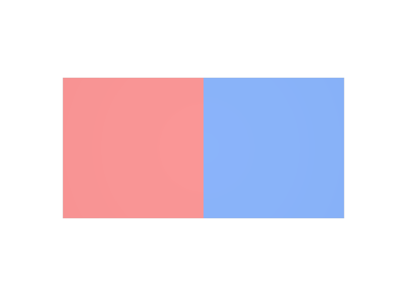

Point数だけ値を書く
このPanelはPointが6個ありますが、uniformで必要なのはFaceの枚数、つまり2個です。Pointごとに色を変えたいときはSTEP 31のvertexを使います。
STEP 30 · PRIMVAR INTERPOLATION
Faceごとに一つの値を持たせます
今日これだけ
公式情報に基づく説明
uniformは、Meshの各Faceへ一つずつ値を対応させるInterpolationです。値の個数は、faceVertexCountsの要素数、つまりFaceの枚数と一致していなければなりません。Faceの内側では値が変化しないため、隣り合うFaceの間には必ずはっきりした境目ができます。
USDA
#usda 1.0
(
defaultPrim = "World"
metersPerUnit = 1
upAxis = "Y"
)
def Xform "World"
{
def Mesh "Panel"
{
uniform token subdivisionScheme = "none"
int[] faceVertexCounts = [4, 4]
int[] faceVertexIndices = [0, 1, 4, 3, 1, 2, 5, 4]
point3f[] points = [
(0, 0, 0), (1, 0, 0), (2, 0, 0),
(0, 1, 0), (1, 1, 0), (2, 1, 0),
]
color3f[] primvars:displayColor = [(0.85, 0.2, 0.2), (0.15, 0.35, 0.85)] (
interpolation = "uniform"
)
}
}faceVertexCounts = [4, 4]は「4頂点の面が2枚ある」という意味なので、Faceは2枚です。そのためprimvars:displayColorにも値を2つ書きます。1つ目の値が1枚目のFace、2つ目の値が2枚目のFaceに対応します。順番はFaceの並び順そのままです。
結果

examples/lesson-24b/uniform.usda / Apple USD Tools 0.25.2 のusdrecord（Hydra Storm・Metal）/ macOS 26.5.2・Apple M4Diagram
Python
from pxr import Gf, Sdf, Usd, UsdGeom
stage = Usd.Stage.CreateNew("uniform.usda")
UsdGeom.Xform.Define(stage, "/World")
mesh = UsdGeom.Mesh.Define(stage, "/World/Panel")
mesh.CreateSubdivisionSchemeAttr("none")
mesh.CreateFaceVertexCountsAttr([4, 4])
mesh.CreateFaceVertexIndicesAttr([0, 1, 4, 3, 1, 2, 5, 4])
mesh.CreatePointsAttr([
Gf.Vec3f(0, 0, 0), Gf.Vec3f(1, 0, 0), Gf.Vec3f(2, 0, 0),
Gf.Vec3f(0, 1, 0), Gf.Vec3f(1, 1, 0), Gf.Vec3f(2, 1, 0),
])
pv = UsdGeom.PrimvarsAPI(mesh).CreatePrimvar(
"displayColor", Sdf.ValueTypeNames.Color3fArray, UsdGeom.Tokens.uniform)
pv.Set([Gf.Vec3f(0.85, 0.2, 0.2), Gf.Vec3f(0.15, 0.35, 0.85)])
stage.Save()渡すリストの要素数が、そのままFaceへの割り当てになります。len(mesh.GetFaceVertexCountsAttr().Get())でFaceの枚数を数えられるので、値を書く前に確認すると間違いが減ります。
USDA → Python mapping
USDA
interpolation = "uniform"↓Python
UsdGeom.Tokens.uniformUSDA
= [(0.85, 0.2, 0.2), (0.15, 0.35, 0.85)]↓Python
pv.Set([Gf.Vec3f(0.85, 0.2, 0.2), Gf.Vec3f(0.15, 0.35, 0.85)])Beginner notes
よくある間違い
このPanelはPointが6個ありますが、uniformで必要なのはFaceの枚数、つまり2個です。Pointごとに色を変えたいときはSTEP 31のvertexを使います。
[4, 4]を足して8個の値を書くのは誤りです。8はFace Vertexの総数で、これはSTEP 33 faceVaryingで使う数です。
USDAにはuniform token subdivisionSchemeのように、Attributeの宣言に付くuniformもあります。こちらは「時間で変化しない」という別の意味です。同じ綴りでも、Primvarのinterpolationとは無関係です。
Glossary
uniformとは別の意味。pointsの位置番号で並べた配列。Official references
確認日: